00 / Executive synthesis
核心结论：模型在变强，证据链仍是瓶颈
AI Biology Labs 的主战场不再只是“能否预测”或“能否生成”，而是能否把模型输出接入可审计的实验、产品和临床证据链。产业团队、学术实验室与非营利平台正在共同推动这一领域，但真正稀缺的是高质量闭环数据、失败样本、湿实验吞吐和跨场景验证。
AI 药物发现是当前最拥挤的赛道之一；蛋白设计、结构预测和基础模型平台构成技术供给层。
判断证据来自论文、开源工具、湿实验结果、药企合作和真实管线等不同层级；商业公告不能等同于药物有效性。
多数方向的模型指标仍与真实生物学效应存在距离。结构、序列或细胞嵌入表现优秀，并不自动意味着可制造、可递送、可临床转化。
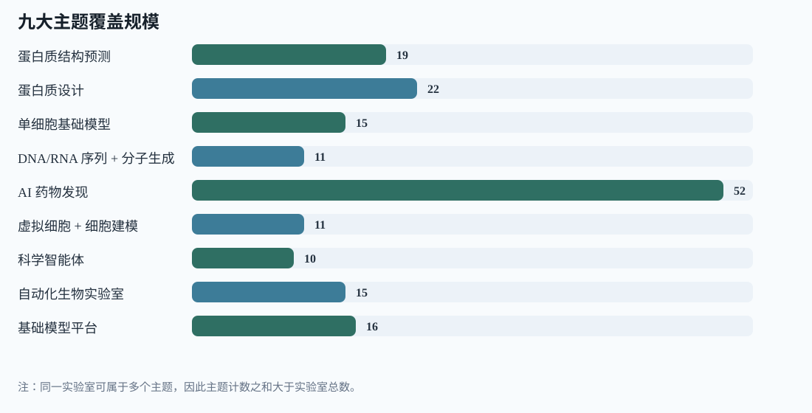
主题覆盖规模。AI 药物发现数量最多，但也是证据链最长、验证成本最高的方向。
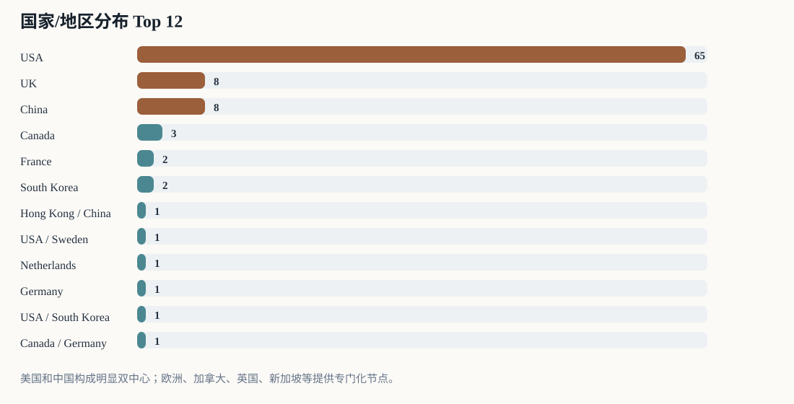
国家/地区分布。美国是绝对中心，中国在 AI 药物发现、蛋白/分子平台和自动化方向形成密集节点。
Framework
全景框架：AI Biology 的四层能力栈
从数据到模型、任务再到证据，AI Biology 的价值必须逐层传递。越靠近底层，规模化越容易；越靠近证据层，越需要实验、临床和产品上下文。
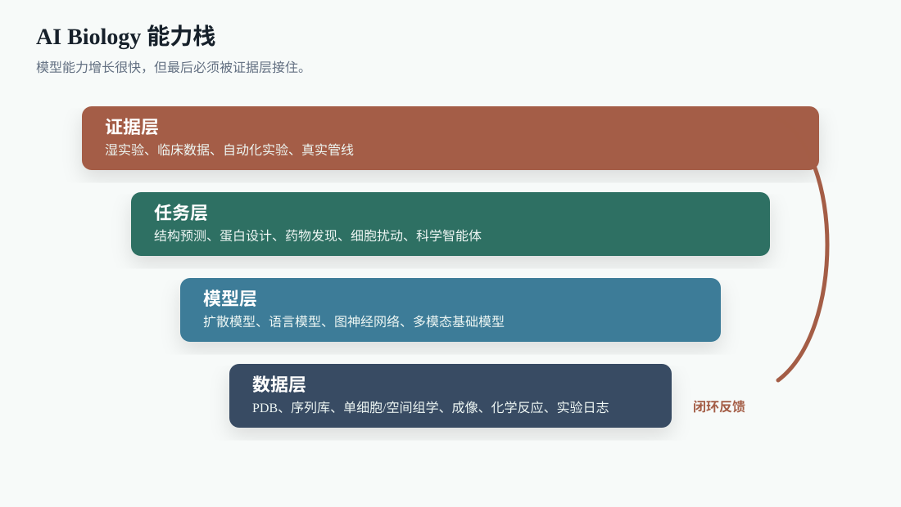
AI Biology 的竞争壁垒正在从单点模型迁移到闭环能力。
01 / Protein Structure Prediction
蛋白质结构预测
结构预测从单链蛋白走向复合物、配体、核酸与抗体等多模态结构，但可用性正在由排行榜分数转向可解释置信度、构象集合与实验闭环。
蛋白质结构预测试图从序列、共进化信息或多模态分子上下文推断三维结构。它是 AI Biology 最成熟的入口之一，因为结构决定结合、催化、稳定性和可设计性，也直接影响抗体、酶、小分子对接和蛋白复合物建模。
代表性 Lab 工作举例
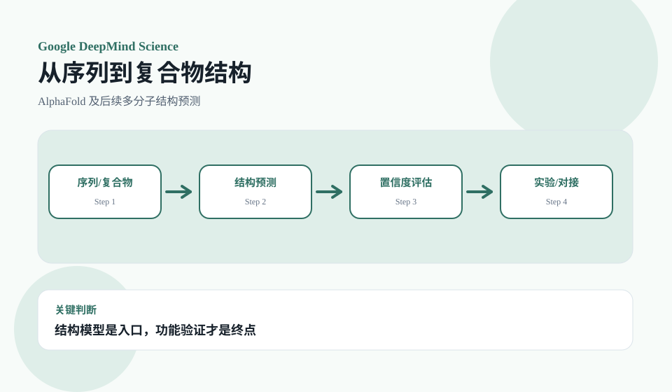
AlphaFold 及后续多分子结构预测
AlphaFold 把结构预测从专家驱动的同源建模推进到大规模自动预测；后续路线进一步把蛋白、核酸、配体和复合物放进同一预测框架，使结构模型成为药物发现和蛋白设计的底层工具。
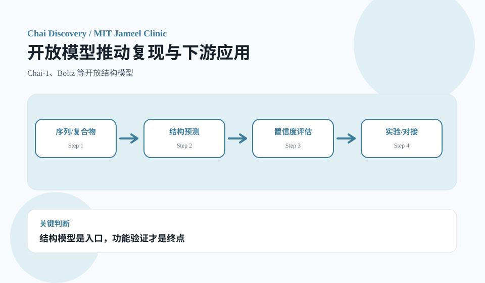
Chai-1、Boltz 等开放结构模型
Chai-1、Boltz 等工作让多模态结构预测不再完全依赖封闭系统，研究者可以把结构预测接入筛选、评估和实验设计流程；但对动态构象、真实亲和力和诱导契合仍需实验校验。
这一方向已经完成从“是否能预测折叠”到“能否支持真实设计与发现”的迁移。AlphaFold 系列、RoseTTAFold、Boltz、Chai-1、Protenix 等系统把结构预测扩展到蛋白-配体、蛋白-核酸和复合物场景，研究重心开始落到不确定性、动态构象、下游筛选和湿实验验证。
代表性证据来自 Google DeepMind、Baker/IPD、Chai Discovery、MIT Jameel Clinic、NVIDIA BioNeMo、EvolutionaryScale、华深智药等团队的论文、软件和平台化输出。
高置信结构不等于高亲和力、可表达性或体内有效性。多构象、诱导契合、膜蛋白、翻译后修饰和实验条件依赖仍然让结构模型很难单独承担发现证据责任。
未来 2-3 年会更强调端到端结构-功能共建模、可校准置信度、主动学习实验回路，以及面向药物化学和抗体工程的专用结构模型。
代表 Lab
代表输出与地理节点
成果：OpenFold、Genie 2、End-to-end differentiable protein structure (Cell Systems 2019)、OpenFold3-preview — bitwise AlphaFold3 reproduction (Oct 2025, Apache 2.0, doi:10.5281/zenodo.19001000)、OpenFold3-preview2 — most performant academic AF3 reproduction to date (contributing: Columbia, LLNL, Novo Nordisk, AWS, SNU, CZI, Absci, SandboxAQ, AMD, NVIDIA, U Bristol)、Chai-1、Chai-2 (de novo antibody design, 20% hit rate)、RFdiffusion (licensed)、RFantibody (licensed)、Internal pipeline
国家/地区：USA、UK、China、USA / South Korea
02 / Protein Design
蛋白质设计
蛋白设计正在从生成漂亮结构转向生成可制造、可测、可优化的功能分子。
蛋白质设计的目标不是预测自然界已有蛋白，而是生成新的序列、骨架或功能分子。AI 方法把设计问题拆成结构生成、序列反设计、功能打分和实验筛选，正在从“能生成”走向“能产生可测功能”。
代表性 Lab 工作举例
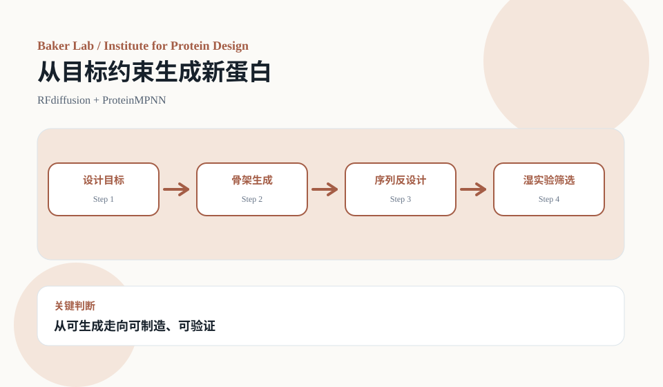
RFdiffusion + ProteinMPNN
Baker/IPD 的 RFdiffusion 用扩散模型生成满足结合或结构约束的蛋白骨架，再用 ProteinMPNN 等方法补全序列，形成从设计假设到湿实验筛选的经典闭环。
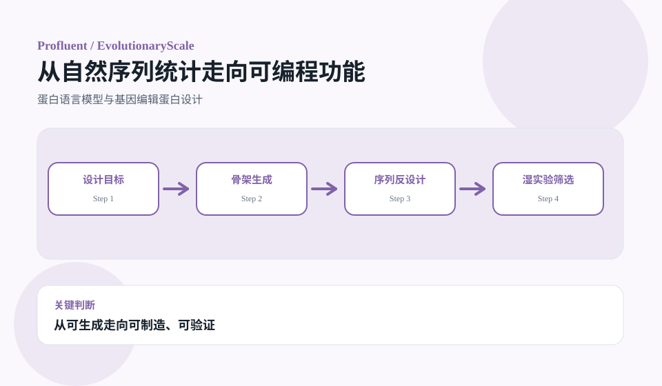
蛋白语言模型与基因编辑蛋白设计
蛋白语言模型从海量序列中学习保守性和功能约束，可用于酶、抗体、CRISPR 相关蛋白等任务；关键挑战是把序列生成结果转化为稳定、低免疫原性且体内有效的分子。
RFdiffusion、ProteinMPNN、ESM3、Generate:Biomedicines、Cradle、Profluent 等路线显示，生成式模型已经能系统地产生 binder、酶、抗体、基因编辑蛋白和材料蛋白候选。真正的竞争壁垒不只是模型，而是数据闭环、实验吞吐、失败样本积累和应用场景约束。
Baker/IPD 与产业团队展示了 de novo binder、酶、macrocycle、protein therapeutics 与 CRISPR 相关设计能力，部分公司还把模型输出接入药物管线或合作项目。
设计空间巨大，但湿实验标签稀缺；模型容易优化结构一致性，却不能稳定优化免疫原性、稳定性、可表达性、递送和体内功能。
方向会从通用蛋白生成转向任务专用的可验证设计，包括可制造抗体、酶工程、细胞递送、基因编辑工具和条件化多目标优化。
代表 Lab
代表输出与地理节点
成果：OpenFold、Genie 2、End-to-end differentiable protein structure (Cell Systems 2019)、OpenFold3-preview — bitwise AlphaFold3 reproduction (Oct 2025, Apache 2.0, doi:10.5281/zenodo.19001000)、OpenFold3-preview2 — most performant academic AF3 reproduction to date (contributing: Columbia, LLNL, Novo Nordisk, AWS, SNU, CZI, Absci, SandboxAQ, AMD, NVIDIA, U Bristol)、Chai-1、Chai-2 (de novo antibody design, 20% hit rate)、The Generate Platform、GB-066 (anti-SLP agonist)、17 programs in preclinical/clinical
国家/地区：USA、UK、Hong Kong / China、China、Netherlands
03 / Single-Cell Foundation Models
单细胞基础模型
单细胞基础模型把细胞表征变成可迁移的语言，但跨批次、跨组织、跨扰动的因果解释仍未解决。
单细胞基础模型把每个细胞看作由基因表达、扰动、组织来源和状态组成的高维样本。它们服务于细胞类型注释、状态表征、扰动预测和疾病机制发现，是虚拟细胞和表型药物发现的重要数据层。
代表性 Lab 工作举例
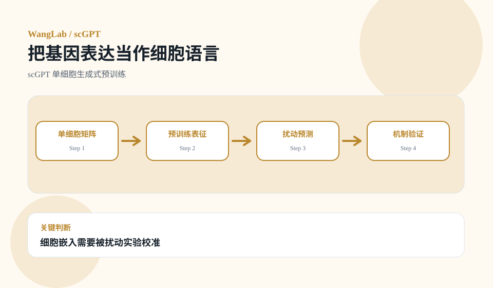
scGPT 单细胞生成式预训练
scGPT 将基因和表达值组织成可预训练的序列表示，用于细胞嵌入、批次校正、注释和扰动任务。它说明单细胞模型可以迁移到多种下游任务，但因果外推仍依赖扰动实验。
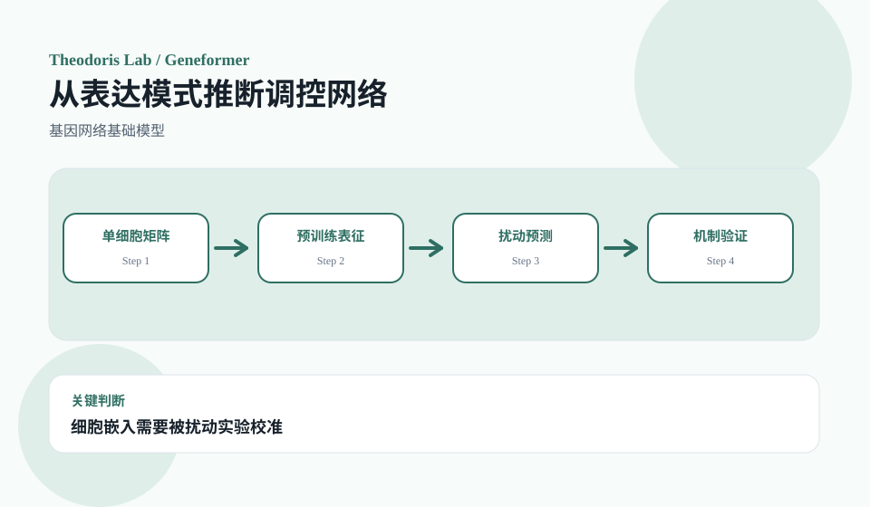
基因网络基础模型
Geneformer 等模型关注基因表达排序和调控关系，适合寻找疾病相关基因网络与候选干预点；局限在于不同组织、批次和疾病状态之间的迁移仍不稳定。
scGPT、Geneformer、scVI/scverse、TranscriptFormer、BioMap、CZI AI Virtual Cell 等工作把单细胞转录组、扰动和细胞状态建成基础模型问题。它们对注释、批次校正、扰动预测和细胞嵌入很有价值，但仍常停留在相关性表征。
学术侧以 WangLab、Theis/scverse、Theodoris Lab、Berger Lab、Stanford/Harvard 图学习团队为核心，非营利和产业侧则推动大规模细胞图谱、平台与虚拟细胞计划。
单细胞数据噪声、批次效应、采样偏差和缺少时间维度会限制模型外推；细胞状态改变是否可转化为疾病机制和药物作用仍需扰动实验验证。
未来会更多整合空间组学、CRISPR perturb-seq、蛋白组、成像和临床表型，形成“细胞状态-扰动-表型”的多模态模型。
代表 Lab
代表输出与地理节点
成果：Recursion OS、Phenom-1/Bayesian models、Exscientia Centaur Chemist、xTrimo V3 (2100亿参数, 7 modalities)、200+ SOTA task models、TrimoCell immune perturbation model、xTrimo V3 — 2100B parameters, 7 modalities (protein, DNA, RNA, cell, small molecule, bio-vision, bio-text) (Oct 2024)、xTrimoGene — efficient scalable transformer for scRNA-seq (NeurIPS 2023)、scFoundation — 100M parameter single-cell model on 50M+ cells (Nature Methods 2024)、Sanofi strategic partnership (billion-dollar, foundation model-based)
国家/地区：USA、China、Canada、USA / Sweden、Germany、Canada / Germany、Israel / USA
04 / DNA/RNA Sequence + Molecule Generation
DNA/RNA 序列 + 分子生成
基因组、RNA 和小分子生成正在共享序列建模与扩散/流模型范式，但评价指标仍远离真实生物效应。
DNA/RNA 序列与分子生成覆盖基因组语言模型、RNA 药物设计、小分子生成、反应预测和分子性质优化。这个主题的共同点是把生物或化学对象表示成可生成、可打分、可优化的序列或图结构。
代表性 Lab 工作举例
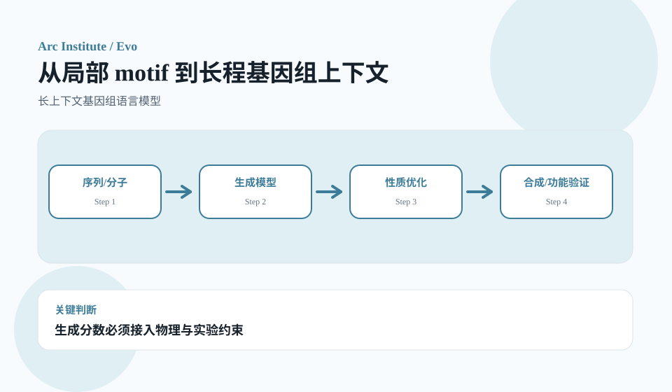
长上下文基因组语言模型
Evo 类模型把基因组序列放入长上下文建模，目标是捕捉调控、保守性和变异效应。它的价值不只在生成序列，更在理解序列变化如何影响功能。
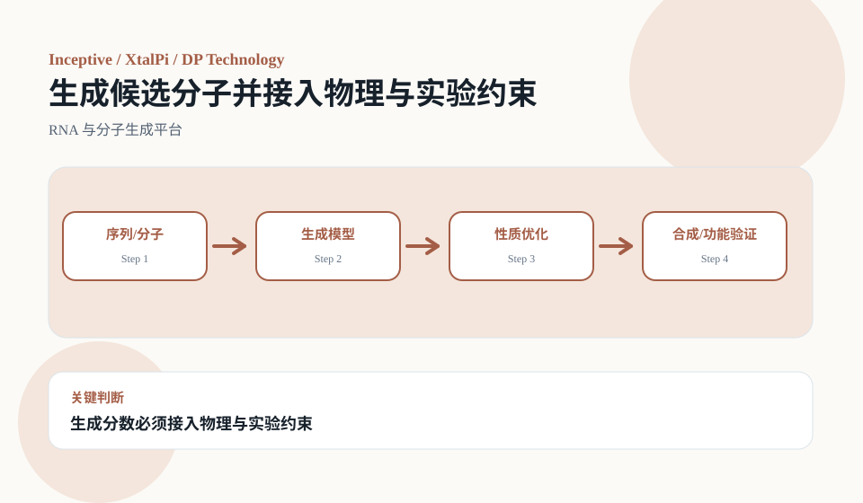
RNA 与分子生成平台
RNA 和小分子生成需要同时考虑稳定性、递送、毒性、可合成性和靶点作用。产业平台通常把生成模型与物理模拟、合成路线和自动化实验结合，以缩短候选优化周期。
Evo、Nucleotide Transformer、GenSLM、Inceptive、XtalPi、DP Technology、Schrodinger 等路线覆盖 DNA/RNA 序列、RNA 药物、小分子构象、反应和材料分子。长上下文和多尺度建模让模型能处理更完整的调控与分子环境。
公开模型与平台显示，序列模型已经能捕捉保守性、变异效应和结构约束；产业侧则把生成与物理模拟、合成路线和自动实验结合。
序列似然和分子打分并不自动对应表达、递送、毒性、免疫反应或可合成性。跨物种、跨细胞类型和临床环境的泛化尤其困难。
会从单一序列生成转向带实验约束的设计：RNA 稳定性、递送载体、调控元件、变异效应预测和与结构/细胞模型耦合的分子优化。
代表 Lab
代表输出与地理节点
成果：ID4 platform、Atompai、Renova、XupremAb (antibody)、ProteinGPT、Ailux、Nucleotide Transformer (50M-2.5B params, 3202 human + 850 species genomes)、ChatNT (multimodal bio conversational agent)、BioNeMo Framework、Geneformer-nv (TE-optimized)
国家/地区：Hong Kong / China、China、UK、USA、Switzerland
05 / AI Drug Discovery
AI 药物发现
AI 药物发现拥有最多机构与资金，但核心问题是从候选生成跨越到临床证据链。
AI 药物发现把模型应用到靶点发现、分子生成、虚拟筛选、ADMET 预测、临床分层和管线决策。它是机构数量最多、商业化最活跃的主题，但也是证据链最长的主题。
代表性 Lab 工作举例
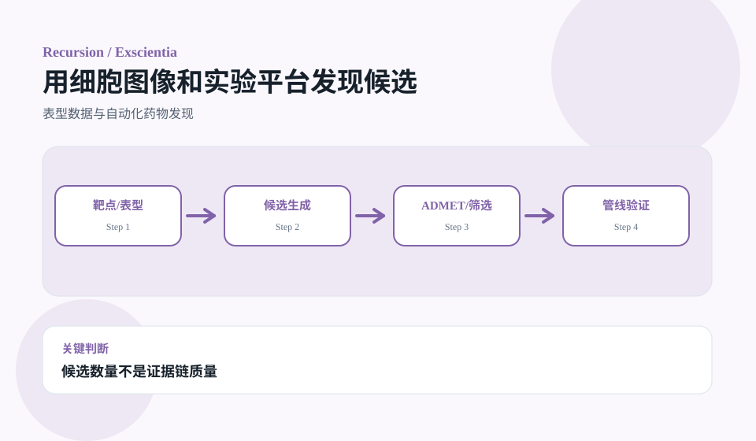
表型数据与自动化药物发现
Recursion 路线强调高通量细胞成像、扰动实验和机器学习表征，把药物发现从单一靶点扩展到表型空间；优势是数据闭环，挑战是人体转化和临床终点。
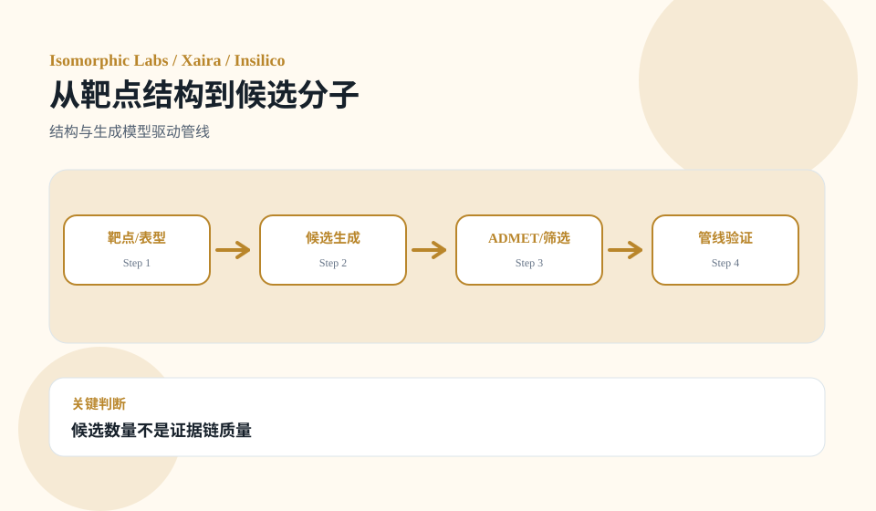
结构与生成模型驱动管线
结构预测、分子生成和多参数优化可加速 hit finding 与 lead optimization。真正的分水岭不在候选数量，而在能否形成从靶点假设到临床证据的可追踪链条。
在当前 AI Biology 图谱中，AI 药物发现是机构最密集、商业牵引最强的方向。Isomorphic Labs、Xaira、Generate、Insilico、Recursion/Exscientia、insitro、XtalPi、Owkin、Valence 等代表了结构驱动、表型驱动、多组学驱动、自动化实验和平台外包等不同路径。
这一领域证据类型最丰富：论文 benchmark、软件、平台、药企合作、融资、管线和临床阶段项目并存。但证据强度差异很大，商业公告不能等价于药物有效性。
候选分子数量增加不等于成功率提高。靶点生物学、疾病模型、ADMET、人体转化、临床终点和监管证据仍是主要瓶颈。
未来竞争会集中在“可追踪的证据链”：从靶点假设、模型生成、实验筛选、动物/类器官验证到临床数据的闭环记录，而不是单点模型性能。
代表 Lab
代表输出与地理节点
成果：Chai-1、Chai-2 (de novo antibody design, 20% hit rate)、The Generate Platform、GB-066 (anti-SLP agonist)、17 programs in preclinical/clinical、Lead: TSLP-targeting antibody for asthma (Phase 3, Tezspire competitor)、3 computationally engineered proteins in clinical testing; 2+ more Phase 1 trials planned 2026、Novartis multi-target collaboration — $65M upfront (incl $15M equity), $1B+ milestones (Sep 2024)、Amgen multi-target collaboration — up to $1.9B、Samsung Life Science Fund investment (Dec 2024)
国家/地区：UK、USA、Hong Kong / China、China、France、Canada、South Korea、Israel / USA
06 / Virtual Cell & Cell Modeling
虚拟细胞 + 细胞建模
虚拟细胞是 AI Biology 的长期愿景：把细胞从静态表达谱变成可模拟、可扰动、可解释的系统。
虚拟细胞希望模拟细胞在扰动、环境和时间中的状态变化。它连接机制模型、单细胞基础模型、空间组学、代谢和信号网络，是 AI Biology 最具野心也最难验证的方向之一。
代表性 Lab 工作举例
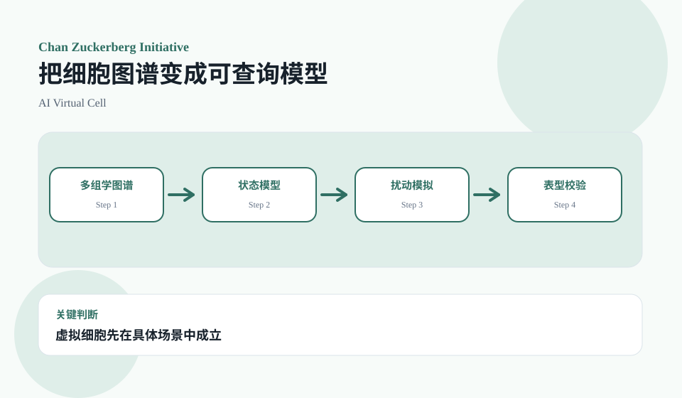
AI Virtual Cell
CZI 的虚拟细胞愿景依赖大规模细胞图谱、多组学和开放工具链，目标是预测细胞状态和扰动响应。近期更可能先在特定细胞类型和疾病场景中落地。
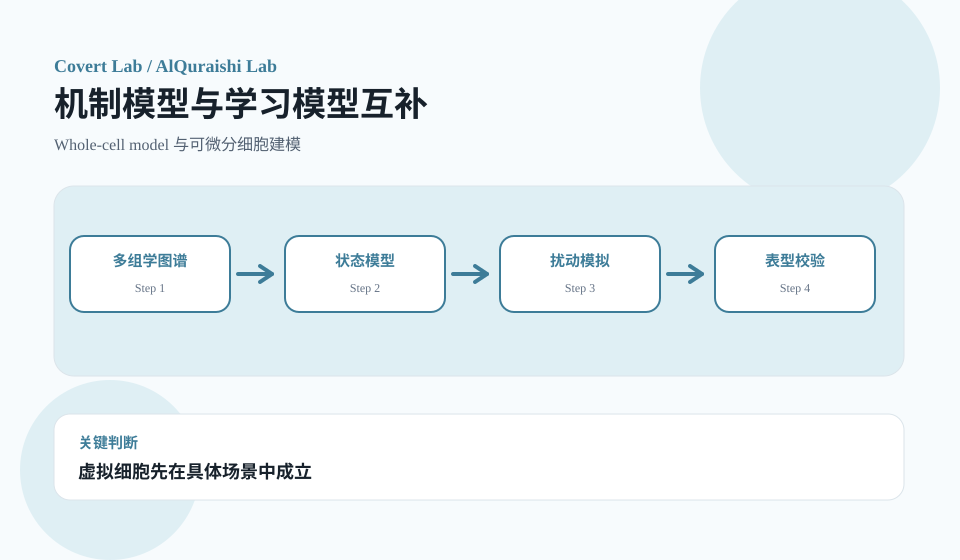
Whole-cell model 与可微分细胞建模
Whole-cell model 提供机制可解释性，深度学习模型提供规模化表征。二者结合后，才可能把代谢、基因调控、信号和表型放进同一模拟框架。
CZI AI Virtual Cell、Covert Lab whole-cell model、AlQuraishi Lab、BioMap、scGPT、Altos、NewLimit 等体现了两条路线：从机制模型逼近全细胞模拟，以及从大规模组学数据学习细胞状态空间。二者正在互相靠近。
全细胞模型提供机制可解释性，单细胞/扰动基础模型提供规模和迁移能力；衰老、重编程、疾病状态矫正和细胞命运控制是主要应用场景。
细胞不是静态向量。代谢、信号、力学、空间邻域、时间动态和微环境相互作用很难同时观测和建模。
可执行的虚拟细胞会先在特定细胞类型、特定扰动和特定疾病场景落地，而不是一次性实现通用细胞模拟器。
代表 Lab
代表输出与地理节点
成果：OpenFold、Genie 2、End-to-end differentiable protein structure (Cell Systems 2019)、OpenFold3-preview — bitwise AlphaFold3 reproduction (Oct 2025, Apache 2.0, doi:10.5281/zenodo.19001000)、OpenFold3-preview2 — most performant academic AF3 reproduction to date (contributing: Columbia, LLNL, Novo Nordisk, AWS, SNU, CZI, Absci, SandboxAQ, AMD, NVIDIA, U Bristol)、xTrimo V3 (2100亿参数, 7 modalities)、200+ SOTA task models、TrimoCell immune perturbation model、xTrimo V3 — 2100B parameters, 7 modalities (protein, DNA, RNA, cell, small molecule, bio-vision, bio-text) (Oct 2024)、xTrimoGene — efficient scalable transformer for scRNA-seq (NeurIPS 2023)
国家/地区：USA、China、Canada、USA / Sweden、Canada / Germany
07 / Scientific Agents
科学智能体
科学智能体把模型从预测器推向实验规划者，但可靠性、工具边界和实验安全是关键约束。
科学智能体把大模型、文献、代码、数据库和实验工具串起来，让模型参与假设生成、实验规划、合成路线设计和结果解释。它的价值在于工作流编排，而不是单轮问答。
代表性 Lab 工作举例
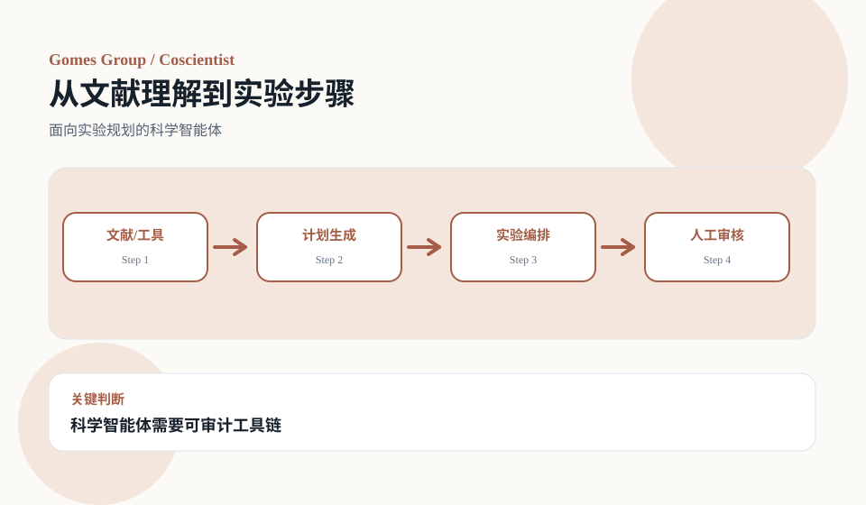
面向实验规划的科学智能体
Coscientist 展示了 LLM 调用工具、规划实验和解释结果的潜力。它说明智能体可作为实验助手，但每一步都需要来源追踪、权限控制和人工审核。
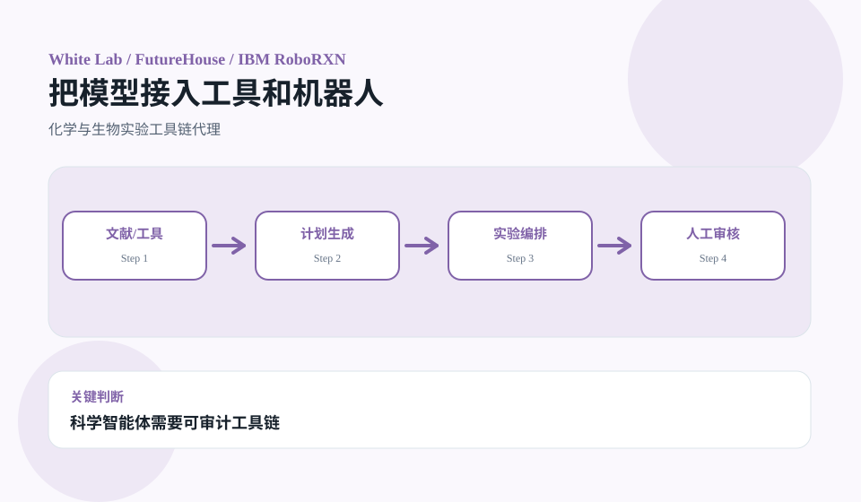
化学与生物实验工具链代理
ChemCrow、FutureHouse 和 RoboRXN 等系统强调检索、反应规划、工具调用和自动执行。可靠性来自可审计工具链，而不是模型自由发挥。
Coscientist、ChemCrow、FutureHouse、CRISPR-GPT、SciAgents、IBM RoboRXN 等工作展示了文献阅读、假设生成、合成路线规划、实验步骤编排和机器人执行的雏形。智能体的价值在于连接知识、工具和实验，而非单轮回答。
代表案例多来自学术实验室和非营利研究机构，也有 IBM 等产业系统把反应规划与自动化执行结合。
LLM 容易产生貌似合理但不可执行的实验建议。科学智能体需要来源追踪、工具调用审计、失败恢复、权限控制和人类审批。
近期会先落在低风险任务：文献综述、实验设计草案、候选过滤、代码/分析自动化、合成路线建议；高自治湿实验需要更严格的安全栅栏。
代表 Lab
代表输出与地理节点
成果：Virtual Lab (LLM agents)、TextGrad、Dragonfly (multimodal LLM)、Mixture-of-Agents、CellVoyager、PINNACLE (single-cell protein biology)、COMPASS (pan-cancer immunotherapy FM)、ATHENA (treatment reasoning agent)、Therapeutics Data Commons、ToolUniverse
国家/地区：USA、UK、Canada、Switzerland
08 / Automated & Lab-Automation + ML
自动化生物实验室
自动化实验室是 AI Biology 从模型走向证据的基础设施。
自动化生物实验室把实验协议、机器人设备、样本追踪、数据采集和模型主动学习连接起来。它不是单纯用机器替代人，而是把实验变成可复现、可版本化、可训练的数据生产系统。
代表性 Lab 工作举例
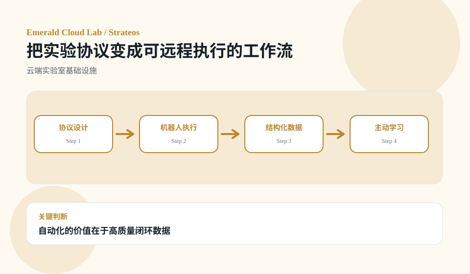
云端实验室基础设施
云实验室让研究者通过标准化协议提交实验，由自动化设备执行并回传结构化数据。它提升可复现性，但对协议表达、元数据和质量控制要求极高。
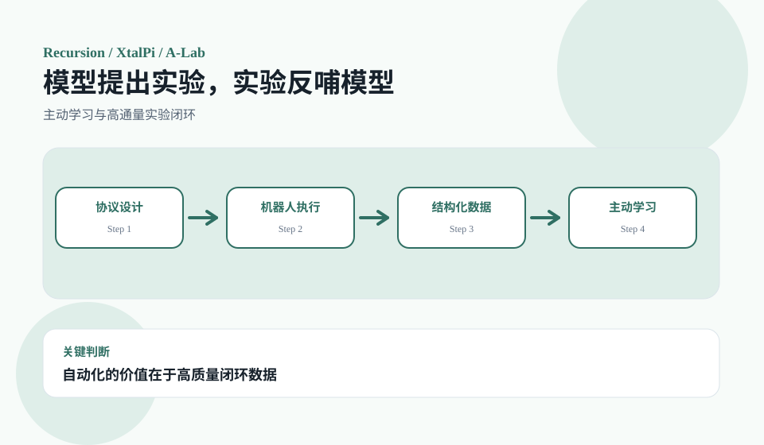
主动学习与高通量实验闭环
自动化平台最适合与主动学习结合：模型选择最有信息量的实验，机器人执行，结果进入下一轮训练。闭环质量取决于失败样本、批次控制和实验日志。
Emerald Cloud Lab、Strateos、CMU Cloud Lab、Recursion、XtalPi、Iktos、A-Lab、Culture Biosciences 等路线说明，自动化的核心不是机器人本身，而是可重复实验、数据标准化和主动学习循环。
自动化平台让模型能够以更稳定的方式提出实验、收集失败样本、更新策略，尤其适合材料、化学合成、细胞成像和高通量筛选。
生物实验复杂度高、协议迁移困难、仪器/试剂/细胞批次差异大。自动化系统若没有良好元数据，很容易只是加速低质量数据生产。
未来实验室会更像数据工厂：协议版本化、样本链路追踪、机器人执行日志和模型训练数据治理将成为平台竞争力。
代表 Lab
代表输出与地理节点
成果：Recursion OS、Phenom-1/Bayesian models、Exscientia Centaur Chemist、insitro platform (ML + automated lab)、Internal pipeline、ID4 platform、Atompai、Renova、XupremAb (antibody)、ProteinGPT
国家/地区：USA、China、France、Canada
09 / Foundation-Model Platforms
基础模型平台
基础模型平台正在把蛋白、细胞、基因组、分子和临床知识接到统一工具链中。
基础模型平台把蛋白、基因组、细胞、小分子、图像和文本模型组织成可复用工具链。平台型机构的目标不是解决单一任务，而是提供模型族、API、数据底座和应用工作流。
代表性 Lab 工作举例
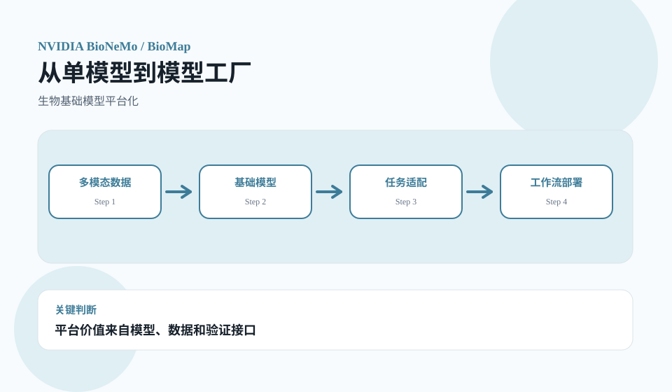
生物基础模型平台化
BioNeMo、BioMap 等平台把蛋白、分子、细胞和文本模型纳入统一生态，降低团队调用模型的门槛。平台价值取决于任务适配、数据质量和实验验证接口。
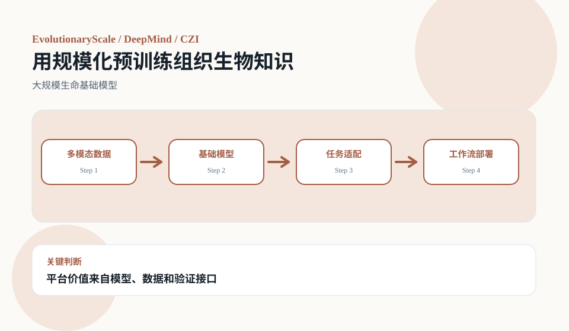
大规模生命基础模型
大规模生命模型试图在序列、结构、细胞和功能之间学习统一表示。它们能提升迁移能力，但若没有任务约束和闭环实验，通用表征很难直接转化为生物学结论。
DeepMind/Isomorphic、NVIDIA BioNeMo、BioMap、Valence、CZI、Altos、EvolutionaryScale、InstaDeep 等构成平台化趋势：不再只发布单个模型，而是提供模型族、API、数据集、训练/推理框架和应用模板。
平台型机构往往跨多个主题，既覆盖结构/序列/细胞模型，也绑定算力、数据、实验或药物发现场景。
平台化容易制造“通用能力”的叙事，但生物学任务高度异质。没有领域数据、实验反馈和任务评价，平台模型会退化为昂贵的通用表征。
会出现更明显的分层：底层多模态生物模型、中层任务适配器、上层实验/药物/诊断工作流。真正稀缺的是闭环数据权利与验证能力。
代表 Lab
代表输出与地理节点
成果：xTrimo V3 (2100亿参数, 7 modalities)、200+ SOTA task models、TrimoCell immune perturbation model、xTrimo V3 — 2100B parameters, 7 modalities (protein, DNA, RNA, cell, small molecule, bio-vision, bio-text) (Oct 2024)、xTrimoGene — efficient scalable transformer for scRNA-seq (NeurIPS 2023)、scFoundation — 100M parameter single-cell model on 50M+ cells (Nature Methods 2024)、Sanofi strategic partnership (billion-dollar, foundation model-based)、200+ SOTA models; 300+ users; >$2B total customer orders、PINNACLE (single-cell protein biology)、COMPASS (pan-cancer immunotherapy FM)
国家/地区：UK、China、USA、Canada、Japan
Horizontal comparison
横向比较：九个方向处在不同可验证性阶段
蛋白结构预测和部分蛋白设计已经拥有相对清晰的 benchmark 与实验验证路径；虚拟细胞、科学智能体仍偏早期；AI 药物发现商业牵引最强，但临床证据链最长。
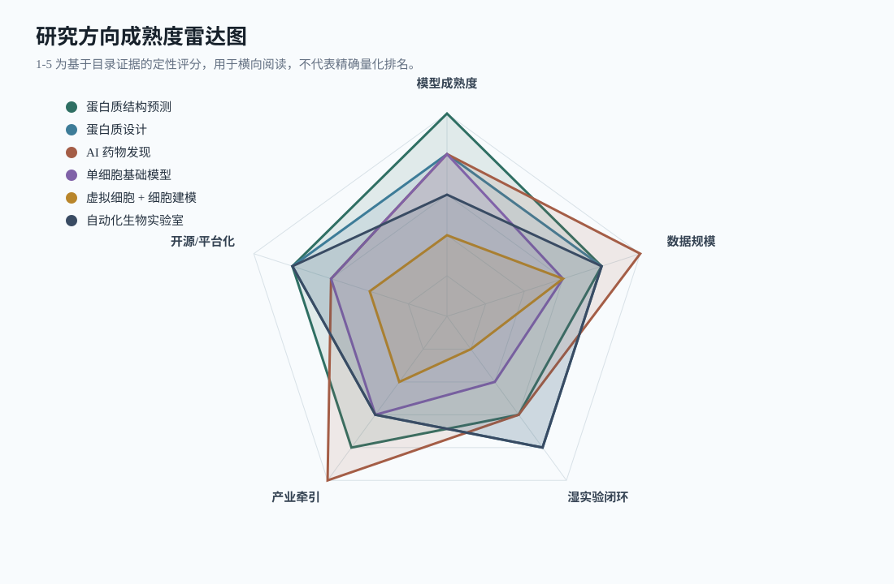
成熟度为基于目录证据的定性判断，用于辅助阅读，不代表精确排名。
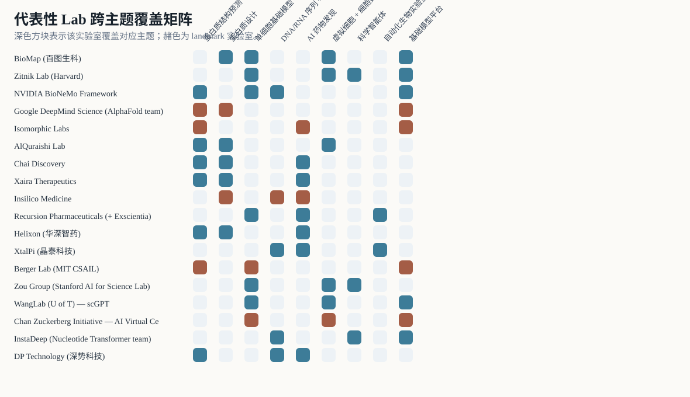
跨主题机构通常更像平台，而单主题机构往往在特定实验或任务闭环中更深。
| 方向 | 当前状态 | 最关键瓶颈 | 下一阶段判断 |
|---|---|---|---|
| 蛋白质结构预测 | 结构预测从单链蛋白走向复合物、配体、核酸与抗体等多模态结构，但可用性正在由排行榜分数转向可解释置信度、构象集合与实验闭环。 | 高置信结构不等于高亲和力、可表达性或体内有效性。多构象、诱导契合、膜蛋白、翻译后修饰和实验条件依赖仍然让结构模型很难单独承担发现证据责任。 | 未来 2-3 年会更强调端到端结构-功能共建模、可校准置信度、主动学习实验回路，以及面向药物化学和抗体工程的专用结构模型。 |
| 蛋白质设计 | 蛋白设计正在从生成漂亮结构转向生成可制造、可测、可优化的功能分子。 | 设计空间巨大，但湿实验标签稀缺；模型容易优化结构一致性，却不能稳定优化免疫原性、稳定性、可表达性、递送和体内功能。 | 方向会从通用蛋白生成转向任务专用的可验证设计，包括可制造抗体、酶工程、细胞递送、基因编辑工具和条件化多目标优化。 |
| 单细胞基础模型 | 单细胞基础模型把细胞表征变成可迁移的语言，但跨批次、跨组织、跨扰动的因果解释仍未解决。 | 单细胞数据噪声、批次效应、采样偏差和缺少时间维度会限制模型外推；细胞状态改变是否可转化为疾病机制和药物作用仍需扰动实验验证。 | 未来会更多整合空间组学、CRISPR perturb-seq、蛋白组、成像和临床表型，形成“细胞状态-扰动-表型”的多模态模型。 |
| DNA/RNA 序列 + 分子生成 | 基因组、RNA 和小分子生成正在共享序列建模与扩散/流模型范式，但评价指标仍远离真实生物效应。 | 序列似然和分子打分并不自动对应表达、递送、毒性、免疫反应或可合成性。跨物种、跨细胞类型和临床环境的泛化尤其困难。 | 会从单一序列生成转向带实验约束的设计：RNA 稳定性、递送载体、调控元件、变异效应预测和与结构/细胞模型耦合的分子优化。 |
| AI 药物发现 | AI 药物发现拥有最多机构与资金，但核心问题是从候选生成跨越到临床证据链。 | 候选分子数量增加不等于成功率提高。靶点生物学、疾病模型、ADMET、人体转化、临床终点和监管证据仍是主要瓶颈。 | 未来竞争会集中在“可追踪的证据链”：从靶点假设、模型生成、实验筛选、动物/类器官验证到临床数据的闭环记录，而不是单点模型性能。 |
| 虚拟细胞 + 细胞建模 | 虚拟细胞是 AI Biology 的长期愿景：把细胞从静态表达谱变成可模拟、可扰动、可解释的系统。 | 细胞不是静态向量。代谢、信号、力学、空间邻域、时间动态和微环境相互作用很难同时观测和建模。 | 可执行的虚拟细胞会先在特定细胞类型、特定扰动和特定疾病场景落地，而不是一次性实现通用细胞模拟器。 |
| 科学智能体 | 科学智能体把模型从预测器推向实验规划者，但可靠性、工具边界和实验安全是关键约束。 | LLM 容易产生貌似合理但不可执行的实验建议。科学智能体需要来源追踪、工具调用审计、失败恢复、权限控制和人类审批。 | 近期会先落在低风险任务：文献综述、实验设计草案、候选过滤、代码/分析自动化、合成路线建议；高自治湿实验需要更严格的安全栅栏。 |
| 自动化生物实验室 | 自动化实验室是 AI Biology 从模型走向证据的基础设施。 | 生物实验复杂度高、协议迁移困难、仪器/试剂/细胞批次差异大。自动化系统若没有良好元数据，很容易只是加速低质量数据生产。 | 未来实验室会更像数据工厂：协议版本化、样本链路追踪、机器人执行日志和模型训练数据治理将成为平台竞争力。 |
| 基础模型平台 | 基础模型平台正在把蛋白、细胞、基因组、分子和临床知识接到统一工具链中。 | 平台化容易制造“通用能力”的叙事，但生物学任务高度异质。没有领域数据、实验反馈和任务评价，平台模型会退化为昂贵的通用表征。 | 会出现更明显的分层：底层多模态生物模型、中层任务适配器、上层实验/药物/诊断工作流。真正稀缺的是闭环数据权利与验证能力。 |
Complete atlas
完整 AI Biology Lab 图谱
下表整理了当前样本中的代表性 lab。可按主题、国家/地区、类型、tier 和关键词筛选。
| Lab | 国家/类型 | 主题 | 方向 | 代表输出 | 证据链接 | Tier |
|---|